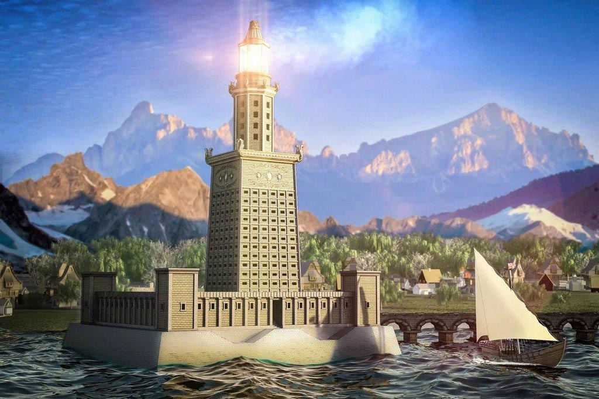

Александрийский (Фаросский) маяк — одно из самых высоких сооружений древнего мира, построенное на острове Фарос у входа в гавань Александрии. Служил навигационным ориентиром для кораблей на протяжении многих веков.
Высота маяка достигала 120 метров. Конструкция состояла из трёх ярусов: нижний квадратный, средний восьмиугольный и верхний цилиндрический. На вершине горел огонь, отражаемый системой бронзовых зеркал, благодаря чему свет был виден на расстоянии до 50 км.
Маяк функционировал более 1600 лет, постепенно разрушаясь от серии мощных землетрясений. К XV веку он полностью обрушился. На его месте в 1477 году мамлюкский султан Кайт-бей построил крепость, часть камней для которой была взята из руин маяка.
Слово «фаро» (маяк) во многих языках (англ. phare, ит. faro, исп. faro) происходит от названия острова Фарос, где стояло это величественное сооружение. Его образ стал прообразом для всех последующих маяков мира.